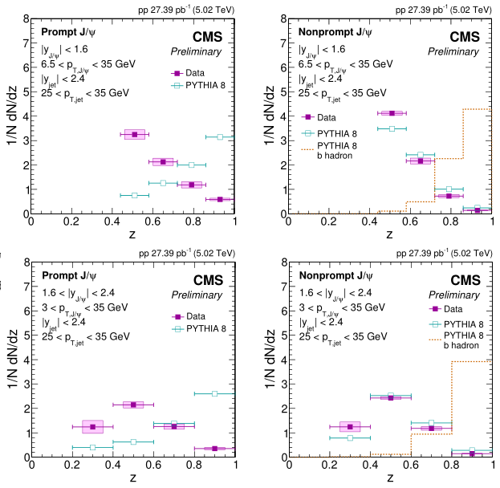

Production in Jets
From IDEA to PAPER.
Repository for references, analysis codes, useful scripts and related discussions.
Software: AliPhysics@ROOT6
Main environment: AliEn World-wide Computing Grid
Local: R710.star.ustc.edu.cn (Dual-E5520 + 16* Dual-E5504)
Development and post-processing are performed on local environment (vAN-20190328_ROOT6). But for alien, all jobs would run on latest version after debug.
For better display of this document, please install browser extension MathJax Plugin for Github (Chrome) or try this external page (temp and not latest). The best solution is to open preview in VS Code with Markdown Preview Enhanced.
Author: Yìtāo WÚ
Contents
- Resource
- Background & Motivation
- Physical Object
- Datasets
- QA
- Signal Extraction
- Correction
- Systematic uncertainties
- Preliminary Result
- Publication
Resource
Software: AliSW@GitHub | GitLab | AliDoc | Offline Database (OADB, OCDB) | ROOT | HEPforge |
Documents: Twiki | Public & Analysis Note | ALICE Offline | ALICE Official |
-
PID: Twiki | PIDinAnalysis | Performance | Bayesian(Indico, arXiv) | Tender |
-
EMCal & Jet: Intro. | Doc. | Trigger | Correction | Embedding |
Service: AliEn | AliMonitor | Glance | JIRA | Vidyo | CERN Account | CERN Service | CA | CERN Mail | e-groups | CERNBox | SWAN |
Tutorial:
- ALICE-analysis-tutorial: Website | Indico | Intro. | DataFlow | LEGO train | NanoAOD | EventInfo | Q-vector | TrackInfo | PID | Flow | EventMixing | Unfolding | Errors | MC, Generator | RIVET | AnaControl | PlotStyle | Visual | QAtools | Git | alice-docs | Doxygen | ML |
- ROOT & C++:
Primer | Courses | Example | PEP-ROOT6 | ROOT5to6 | Python | ModernC++ | Pointers | Profiling | - Others:
AliSW tutorial | AliBuild | PCG | Debug@ALICE | Starterkit2018 | - School & Course:
INFN-ESC | Huada-QCD | Geant4-events | GSI-Summer | France-China | CERN-Summer | CERN-Fermi | Euro-Inst. | Trigger-DAQ |
Conference & Meeting: ALICE Conference |
- Indico@CERN: ALICE Week | PWG | EMCal | ITS | TPC |
- Other Indico: Indico@IHEP | Indico@USTC-PNP | Indico@IN2P3 |
- Quark Matter: QM2019 | QM2018 | QM2017 | QM2015 | QM2014 | QM2012 |
- Hard Probe: HP2018 | HP2016 | HP2015 |
- Strangeness Quark Matter: SQM2019 | SQM2017 |
- LHC Physics: LHCP2019 | LHCP2018 | LHCP2017 | LHCP2016 | LHCP2015 | LHCP2014 | LHCP2013 |
- Others: VCI
Publication: InspierHEP | CERN Document Server | HEPData | Google Scholar | Microsoft Academic | SCImago Journal Rank |
Background & Motivation
To understood the production mechanism, and explain the lack of observed polarization in high range. Previous results from LHCb and CMS are disagree with NRQCD predictions implemented by Pythia8.


Reference
- Baumgart, Matthew, et al. "Probing quarkonium production mechanisms with jet substructure." JHEP 1411 (2014) 003 [INSPIRE]
- LHCb Collaboration, "Study of Production in Jets", Phys.Rev.Lett. 118 (2017) no.19, 192001 [INSPIRE]
- Kang, Zhong-Bo, et al. " production and polarization within a jet." Phys.Rev.Lett. 119 (2017) no.3, 032001. [INSPIRE]
- Bain, Reggie, et al. "NRQCD Confronts LHCb Data on Quarkonium Production within Jets." Phys.Rev.Lett. 119 (2017) no.3, 032002. [INSPIRE]
- CMS Collaboration, "Production of prompt and nonprompt mesons in jets in pp collisions at ", CMS-PAS-HIN-18-012, [CDS]
- Dai, Lin, et al. "Quarkonium Polarization and the Long Distance Matrix Elements Hierarchies using Jet Substructure" Phys.Rev. D96 (2017) no.3, 036020 [INSPIRE]
- Dai, Lin, et al. "Heavy quark jet fragmentation." JHEP 1809 (2018) 109 [INSPIRE]
- Dai, Lin. "Applications of QCD Effective Theories to the Physics of Jets and Quarkonium Production." PhD Diss. University of Pittsburgh, 2018. [PDF]
- Konrad Tywoniuk, "Theory Overview - J/psi production in jets" ALICE Jpsi2ee PAG workshop, April 2019 [SLIDES]
Physical Object
The jet fragmentation function , which is the fraction carried by in jets.
In proton-proton collision at , mesons are reconstructed using their dielectron channel in central barrel. The dielectron events were selected offline with the L0 trigger system, requiring one leg in EMCal/DCal and exceed the L1 energy threshold. Other analysis cuts deployed for electron identification will be presented in following sections. Prompt and non-prompt mesons are seperated by pesudo-proper decay length.
Jets are clustered using the anti- algorithm from charged tracks, with R=0.2, which provides by fastjet package.
Related analysis @ ALICE
- [AN-646] "J/ψ measurements in pp collisions at s√ = 13 TeV using EMCal-triggered events with ALICE at LHC", Cristiane Jahnke (Munich EC, DE), 29 June, 2017
- [AN-876] "Inclusive Jpsi production cross-section in pp collisions at 13TeV", Ingrid Mckibben Lofnes (UBergen, NO), 19 March, 2019
- [AN-850] "Multiplicity dependence of charged jet production in pp collisions at 13 TeV", Yongzhen Hou (CCNU, CN), 21 September, 2018
- [AN-746] "Inclusive J/psi - hadron correlations at mid-rapidty in MB and high multiplicity pp collisions at sqrt(s) = 13 TeV", Lucas Altenkamper (UBergen, NO), 26 April, 2018
Datasets
ALICE Run2 pp 13TeV (with EMC), 2016-2018
- From DPG twiki : DataTaking | Production | RunLists-calo |
- From MonALISA: RCT (DET Status Flags - SPD + SDD + SSD + TPC + V0 + EMCal)|
- From LEGO train : DQ_pp_AOD | Jet_EMC_pp |
All datasets used is collected in Datasets/DQ_pp_AOD.C, which can be executed and accessed like DATASETS["16l_pass1"]. If not in LEGO train, the number of jobs will be limited under 1500, about 33 runs. Original run lists from DPG is stored under Datasets/DATA/.
| Run Period | MB | Muon | EMCAL | N runs | INT7 | EMCEGA | EG1 | EG2 | DG1 | DG2 | Nano |
|---|---|---|---|---|---|---|---|---|---|---|---|
| 18p | 64,723,976 | 38,946,331 | 8,206,052 | 66 | |||||||
| 18o | 27,495,955 | 14,997,718 | 3,506,262 | 26 | |||||||
| 18n* | 3,835,344 | 21,207 | 2 | ||||||||
| 18m | 134,624,309 | 60,378,259 | 15,669,592 | 142 | |||||||
| 18l | 40,366,370 | 16,800,730 | 4,118,681 | 39 | |||||||
| 18k | 8,764,716 | 36,793,499 | 906,769 | 10 | |||||||
| 18j | 96,797 | 43,361 | 9,597 | 1 | |||||||
| 18i* | 55,845,385 | 553,722 | 7 | ||||||||
| 18h | 4,251,665 | 1,834,724 | 434,065 | 2 | |||||||
| 18g* | 1,508,180 | 1 | |||||||||
| 18f | 44,009,568 | 18,923,929 | 4,653,741 | 46 | |||||||
| 18e | 52,440,125 | 21,328,980 | 6,170,463 | 38 | |||||||
| 18d | 28,079,632 | 11,969,409 | 3,317,779 | 28 | |||||||
| 18c* | 267,232,152 | 14,312,085 | 46 | ||||||||
| 18b* | 167,363,075 | 2,107,216 | 22 | ||||||||
| 17r | 25,356,149 | 16,306,258 | 4,554,303 | 27 | |||||||
| 17o | 101,301,254 | 61,352,135 | 17,350,119 | 128 | |||||||
| 17m* | 97,253,493 | 15,004,475 | 4,932,360 | 93 | |||||||
| 17l | 66,971,443 | 41,517,736 | 11,726,035 | 105 | |||||||
| 17k | 89,488,618 | 38,583,640 | 11,652,619 | 93 | |||||||
| 17j* | 41,314,510 | 163,093 | 10 | ||||||||
| 17i* | 54,162,665 | 14,422,733 | 4,209,950 | 56 | |||||||
| 17h* | 90,126,837 | 16,633,082 | 5,610,223 | 63 | |||||||
| 17g* | 110,598,542 | 1,620,926 | 26 | ||||||||
| 17f* | 12,112,114 | 106,809 | 3,583 | 5 | |||||||
| 17c* | 1,962,343 | 601 | 4 | ||||||||
| 16p | 23,175,087 | 13,077,528 | 2,570,124 | 39 | |||||||
| 16o* | 9,397,646 | 3,195,337 | 740,813 | 17 | |||||||
| 16l | 30,687,176 | 17,153,082 | 18,057,636 | 51 | |||||||
| 16k | 105,446,176 | 47,974,758 | 17,241,173 | 123 | |||||||
| 16j | 53,638,211 | 14,260,378 | 3,581,261 | 33 | |||||||
| 16i | 36,566,073 | 12,227,075 | 2,272,121 | 14 | |||||||
| 16h* | 50,404,063 | 11,696,888 | 35 | ||||||||
| 16g* | 19,103,014 | 2,450,982 | 8 | ||||||||
| Total | 1,619,516,002 | 438,267,301 | 124,113,415 | 1,127 |
Luminosity and event normalization
Luminosity is used to normalize the measured spectra for cross section estimation.
The determinination of the integrated luminosity is based on the measurement of a reference cross section, , obtained from a van-der-Meer scan. From result in 2015: , while .
The number of events includes events with and without a reconstructed vertex within the vertex requirement . We assume the events without a reconstructed vertex follow the same vertex distribution as reconstructed events, so the event number can be estimated from the fraction (with Gaussian function).
QA
To check the status and performance of detectors and the agreement between data and MC. Level: Run, Event, Track, Detector, PID, Phys. Objects
- From DPG and PWG/PAG tutorial.
- From related analysis note.
Run-wise
Run-wise QA is generated from histograms of event, track, cluster and other levels run-by-run. Average value of variables and event counts are frequently used indexes. If possible, use THnSparse to store variables for the convenience of post plotting.
| Parameter | Description | Method |
|---|---|---|
| Number and fraction of events in triggers and event cuts. | ||
| Average number of good tracks | ||
| Average number of SPD tracklets | ||
| Mean and sigma value of vertex Z or (X/Y/XY) | ||
| Average number of vertex contributors | ||
| Average value of multiplicity, includes VZERO amp. | ||
| Average value of event plane Q value | ||
| Average number of calo clusters | ||
| - | Identify bad cells/RCU | |
| Dead or Hot/Warm cells | ||
| Average value or distribution of selected tracks after selection, basic and PID variables |
Event
Trigger and event cut overview histograms, like MB, Pileup, good, , ratio of different trigger or cut definition.
Statistics of event selection (vs triggers, and in run-wise): Physics Selection (PS), trigger, event cuts, track cuts (no tracks), filtered in nano AOD (with candidates of physics objects) and corresponding reject reasons.
Event ID =
For offline trigger,use AliAnalysisTaskMultiDielectron::SetTriggerMask instead of AliAnalysisTaskSE::SelectCollisionCandidates, if event cuts/filter existed. And trigger class is selected by AliAnalysisTaskMultiDielectron::SetFiredTriggerName. (PWGDQ/dielectron ONLY)
ALICE Offline Triggers
from AliVEvent.h)
| EOfflineTriggerTypes | BIT(N) | Description |
|---|---|---|
| kMB | 0 | Minimum bias trigger in PbPb 2010-11 |
| kINT1 | 0 | V0A | V0C | SPD minimum bias trigger |
| kINT7 | 1 | V0AND minimum bias trigger (MB for pp) |
| kMUON | 2 | Single muon trigger in pp2010-11, INT1 suite |
| kHighMult | 3 | High-multiplicity SPD trigger |
| kHighMultSPD | 3 | High-multiplicity SPD trigger |
| kEMC1 | 4 | EMCAL trigger in pp2011, INT1 suite |
| kCINT5 | 5 | V0OR minimum bias trigger |
| kINT5 | 5 | V0OR minimum bias trigger |
| kCMUS5 | 6 | Single muon trigger, INT5 suite |
| kMUSPB | 6 | Single muon trigger in PbPb 2011 |
| kINT7inMUON | 6 | INT7 in MUON or MUFAST cluster |
| kMuonSingleHighPt7 | 7 | Single muon high-pt, INT7 suite |
| kMUSH7 | 7 | Single muon high-pt, INT7 suite |
| kMUSHPB | 7 | Single muon high-pt in PbPb 2011 |
| kMuonLikeLowPt7 | 8 | Like-sign dimuon low-pt, INT7 suite |
| kMUL7 | 8 | Like-sign dimuon low-pt, INT7 suite |
| kMuonLikePB | 8 | Like-sign dimuon low-pt in PbPb 2011 |
| kMuonUnlikeLowPt7 | 9 | Unlike-sign dimuon low-pt, INT7 suite |
| kMUU7 | 9 | Unlike-sign dimuon low-pt, INT7 suite |
| kMuonUnlikePB | 9 | Unlike-sign dimuon low-pt in PbPb 2011 |
| kEMC7 | 10 | EMCAL/DCAL L0 trigger, INT7 suite |
| kEMC8 | 10 | EMCAL/DCAL L0 trigger, INT8 suite |
| kMUS7 | 11 | Single muon low-pt, INT7 suite |
| kMuonSingleLowPt7 | 11 | Single muon low-pt, INT7 suite |
| kPHI1 | 12 | PHOS L0 trigger in pp2011, INT1 suite |
| kPHI7 | 13 | PHOS trigger, INT7 suite |
| kPHI8 | 13 | PHOS trigger, INT8 suite |
| kPHOSPb | 13 | PHOS trigger in PbPb 2011 |
| kEMCEJE | 14 | EMCAL/DCAL L1 jet trigger |
| kEMCEGA | 15 | EMCAL/DCAL L1 gamma trigger, including high and low trigger classes |
| kHighMultV0 | 16 | High-multiplicity V0 trigger |
| kCentral | 16 | Central trigger in PbPb 2011 |
| kSemiCentral | 17 | Semicentral trigger in PbPb 2011 |
| kDG | 18 | Double gap diffractive |
| kDG5 | 18 | Double gap diffractive |
| kZED | 19 | ZDC electromagnetic dissociation |
| kSPI7 | 20 | Power interaction trigger |
| kSPI | 20 | Power interaction trigger |
| kINT8 | 21 | 0TVX trigger |
| kMuonSingleLowPt8 | 22 | Single muon low-pt, INT8 suite |
| kMuonSingleHighPt8 | 23 | Single muon high-pt, INT8 suite |
| kMuonLikeLowPt8 | 24 | Like-sign dimuon low-pt, INT8 suite |
| kMuonUnlikeLowPt8 | 25 | Unlike-sign dimuon low-pt, INT8 suite |
| kMuonUnlikeLowPt0 | 26 | Unlike-sign dimuon low-pt, no additional L0 requirement |
| kUserDefined | 27 | Set when custom trigger classes are set in AliPhysicsSelection |
| kTRD | 28 | TRD trigger |
| kMuonCalo | 29 | Muon-calo triggers |
| kCaloOnly | 29 | MB, EMCAL and PHOS triggers in CALO or CALOFAST cluster |
| Bits 30 and above are reserved for FLAGS | ||
| kFastOnly | 30 | The fast cluster fired. This bit is set in to addition another trigger bit, e.g. kMB |
| kAny | 0xffffffff | to accept any defined trigger |
| kAnyINT | kMB | kINT7 | kINT5 | kINT8 | kSPI7. to accept any interaction (aka minimum bias) trigger |
ALICE Trigger Classes
from ALICE Trigger Coordination and CTP
Trigger Class = Trigger Condition + Trigger Cluster + Trigger Vetoes
Typical trigger class name:
CEMC7EGA-B-NOPF-CENTNOTRD
[Decriptor]-[BC_mask]-[PF_protection]-[Cluster].
- Descriptor: combination of trigger inputs, L0+L1 (AND, OR, VETO logic is possible).
- BC mask: information about interactions (beam-beam, beam-gas, satellite, etc.).
- Past-Future protection: rejects events with multiple collisions from different bunch crossings
- Cluster: group of detectors to be readout if the trigger conditions is satisfied (ALLNOTRD, CENTNOTRD, ALL, CENT, FAST, MUON)
AOD tree structure
from AliAODEvent.h
AOD (Analysis Object Data) is skimmed data for higher-level analysis, conveted from ESD by AliAnalysisTaskESDfilter.
| AODListIndex_t | Name | Description |
|---|---|---|
| kAODHeader | header | Event meta information, such as run number, magnetic field, diamond, trigger, etc. |
| kAODTracks | tracks | Charged tracks array |
| kAODVertices | vertices | Vertex array |
| kAODv0 | v0s | |
| kAODcascade | cascades | |
| kAODTracklets | tracklets | SPD tracklets |
| kAODJets | jets | |
| kAODEmcalCells | emcalCells | |
| kAODPhosCells | phosCells | |
| kAODCaloClusters | caloClusters | EMCal, DCal, PHOS clusters array |
| kAODEMCALTrigger | emcalTrigger | |
| kAODPHOSTrigger | phosTrigger | |
| kAODFmdClusters | fmdClusters | |
| kAODPmdClusters | pmdClusters | |
| kAODHMPIDrings | hmpidRings | |
| kAODDimuons | dimuons | |
| kAODTZERO | AliAODTZERO | |
| kAODVZERO | AliAODVZERO | |
| kAODZDC | AliAODZDC | |
| kAODAD | AliAODAD | |
| kTOFHeader | AliTOFHeader | Event time estimated by TOF |
| kAODTrdTracks | trdTracks | |
| - | Forward | |
| - | ForwardEP | |
| - | CentralClusters | |
| - | MultSelection | |
| - | UserInfo |
Variables on event level:
- Vertex: Z distribution and XY.
- Multiplicity, centrality and event plane.
- N candidates, , ...
- Clusters: Numbers, Energy distribution, etc.
| Parameter | Description | Std. Method | Typical value | Setup |
|---|---|---|---|---|
| Z postion (cm) of primary vertex | aod->GetPrimaryVertex()->GetZ() | [-50,50] / 0.1 | ||
| X position (cm) | aod->GetPrimaryVertex()->GetX() | [-0.5,0.5] / 0.001 | ||
| Y position (cm) | aod->GetPrimaryVertex()->GetY() | [-0.5,0.5] / 0.001 | ||
| Diamond | Z position and width of the interaction point (IP) (cm) | header->GetDiamondX()/GetSigma2DiamondX() | - | |
| X position and width of the interaction point (IP) (cm) | header->GetDiamondX()/GetSigma2DiamondX() | - | ||
| Y position and width of the interaction point (IP) (cm) | header->GetDiamondX()/GetSigma2DiamondX() | - | ||
| Number of primary vertex contributors | [0,500] / 1 | |||
| Number of SPD tracklets (aod->GetMultiplicity()), by layers | spd->GetNumberOfTracklets() | [0,200] / 1 | ||
| - | Correction needed for multiplicity analysis | |||
| Number of ITS clusters, by layers. | spd->GetNumberOfITSClusters(lr) | [0,20000] / 1 | ||
| SPD (pixel), layer 0 and 1 | [0,10000] / 1 | |||
| SDD (drift), layer 2 and 3 | [0,3000] / 1 | |||
| SSD (strip), layer 4 and 5 | [0,2000] / 1 | |||
| Number of SPD fired chips (1200 in total), by layers. | spd->GetNumberOfFiredChips(lr) | [0,1200] / 1 | ||
| Number of tracks w/ or w/o track cuts | aod->GetNumberOfTracks() | [0,4000] / 1 | ||
| Amplitute of VZERO multiplicity decision as sum of 64 ch. (aod->GetVZEROData()) | vzero->GetMultiplicity(ch) | [0,2000] / 1 | ||
| V0A, channel 32 - 63 | vzero->GetMultiplicityV0A(ch) | [0,2000] / 1 | ||
| V0C, channel 0 - 31 | vzero->GetMultiplicityV0A(ch) | [0,2000] / 1 | ||
| Centrality | Estimtor by multiplicity percentiles or impact factor | AddTaskMultSelection.C | ||
| Q-vector | Event plane framework | AddTaskFlowQnVectorCorrections.C | ||
| Number of calo clusters | aod->GetNumberOfCaloClusters() | [0,500] / 1 | ||
| Energy distribution of calo clusters (GeV) | calo->E() | [0,300] / 0.1 |
*spd is the instance of SPD tracklets AliAODTracklets from AliAODEvent::GetMultiplicity().
*Typical values and histogram setup are referred to [AN746] and fully AOD tree.
Track & TPC-ITS
Track selection and tracking parameters. The getter methods depend on the variable manager in PWG analysis framework, while methods listed blow are standard function from basic class in AliRoot/STEER.
Track types / status flag
from AliVTrack.h
| Enum | BIT(N) | Description |
|---|---|---|
| kITSin | 0 | |
| kITSout | 1 | |
| kITSrefit | 2 | |
| kITSpid | 3 | |
| kTPCin | 4 | |
| kTPCout | 5 | |
| kTPCrefit | 6 | |
| kTPCpid | 7 | |
| kTRDin | 8 | |
| kTRDout | 9 | |
| kTRDrefit | 10 | |
| kTRDpid | 11 | |
| kTOFin | 12 | |
| kTOFout | 13 | |
| kTOFrefit | 14 | |
| kTOFpid | 15 | |
| kHMPIDout | 16 | |
| kHMPIDpid | 17 | |
| kEMCALmatch | 18 | |
| kTRDbackup | 19 | |
| kTOFmismatch | 20 | |
| kPHOSmatch | 21 | |
| kITSupg | 22 | flag that in the ITSupgrade reco |
| kSkipFriend | 23 | flag to skip friend storage |
| kGlobalMerge | 24 | |
| kMultInV0 | 25 | assumed to be belong to V0 in multiplicity estimates |
| kMultSec | 26 | assumed to be secondary (due to the DCA) in multiplicity estimates |
| kEmbedded | 27 | Is a track that has been embedded into the event |
| kITSpureSA | 28 | |
| kTRDStop | 29 | |
| kESDpid | 30 | |
| kTIME | 31 | |
| Others | - | |
| kTRDnPlanes | 6 | Not in BIT |
| kEMCALNoMatch | -4096 | |
| kTOFBCNA | -100 |
Track bits / pre-defined filter
from AliAODTrack.h, and the details is located in AliAnalysisTaskESDfilter and AliESDtrackCuts. As usual, the track cuts contains TPC cluster number, , DCA, refit requirements and kink rejection:
| AODTrkFilterBits_t | BIT(N) | Description | Detail |
|---|---|---|---|
| kTrkTPCOnly | 0 | Standard TPC only tracks | GetStandardTPCOnlyTrackCuts |
| kTrkITSsa | 1 | ITS standalone, require ITS standalone tracks (remove pure SA) | ?SetRequireITSStandAlone(kTRUE)? |
| kTrkITSConstrained | 2 | Pixel OR necessary for the electrons AND standard track cuts | SetClusterRequirementITS(kSPD, kAny) |
| kTrkElectronsPID | 3 | PID for the electrons | SetTPCnSigmaCut(AliPID::kElectron, 3.5) |
| kTrkGlobalNoDCA | 4 | standard cuts with very loose DCA (|xy|>2.4, |z|<3.2, 2D=kTRUE) | GetStandardITSTPCTrackCuts2011(kFALSE) |
| kTrkGlobal | 5 | standard cuts with tight DCA cut, (|xy|<"0.0105+0.0350/pt^1.1", |z|<2) | GetStandardITSTPCTrackCuts2011(kTRUE) |
| kTrkGlobalSDD | 6 | standard cuts with tight DCA but with requiring the first SDD cluster instead of an SPD cluster tracks selected by this cut are exclusive to those selected by the previous cut | GetStandardITSTPCTrackCuts2011(kTRUE), GetClusterRequirementITS(kSPD,kNone), GetClusterRequirementITS(kSDD,kFirst) |
| kTrkTPCOnlyConstrained | 7 | Refitted TPC only tracks: TPConly information constrained to SPD vertex in the filter below | GetStandardTPCOnlyTrackCuts, esdFilter->SetTPCOnlyFilterMask(128) |
| AODTrkBits_t | |||
| kIsDCA | 14 | set if fPosition is the DCA and not the position of the first point | |
| kUsedForVtxFit | 15 | set if this track was used to fit the vertex it is attached to | |
| kUsedForPrimVtxFit | 16 | set if this track was used to fit the primary vertex | |
| kIsTPCConstrained | 17 | set if this track is a SA TPC track constrained to the SPD vertex, needs to be skipped in any track loop to avoid double counting | |
| kIsHybridTPCCG | 18 | set if this track can be used as a hybrid track i.e. Gbobal tracks with certain slecetion plus the TPC constrained tracks that did not pass the selection | |
| kIsGlobalConstrained | 19 | set if this track is a global track constrained to the vertex, needs to be skipped in any track loop to avoid double counting | |
| kIsHybridGCG | 20 | set if this track can be used as a hybrid track i.e. tracks with certain selection plus the global constraint tracks that did not pass the selection |
| Parameter | Description | Std. Method | Typical Value | Setup |
|---|---|---|---|---|
| -- | Basic kinematic variables | |||
| Distance of the closest approach. can be used for rejection of out-of-bunch pileup tracks, while large is related to the subsequent decays or photon conversions. | ||||
| TPC cluster number, [0,160] | ||||
| ITS cluster number, [0,6] | ||||
| TPC cluster tracking/fitting | ||||
| ITS cluster tracking/fitting | ||||
| Kink | Tracks which does not have a continous particle trajectories, but show deviations due to decays or the emission of Bremsstrahlung. | |||
| Refit | Fitting method, include ITS and TPC |
For electron, the particle can hit the first or the second layer of the ITS detector (kAny). This cut helps to remove electrons from gamma conversion.
Calo Cluster / EMCAL+DCAL+PHOS
The cluster QA covers general cluster and cell properties. Official QA Repository, reference task - AliAnalysisTaskClusterQA / AddTask_ClusterQA from Gamma Conversion Group. Be careful with the binning of cluster energy histograms. All histogram can be updated after triggger selection and QA or analysis cuts (pt range, track charge, etc.).
| Parameter | Description | Method |
|---|---|---|
| Number of cells fired | ||
| Energy vs Cell ID | ||
| Timing vs Cell ID | ||
| Number and averge of clusters | ||
| - | Geomtry map of cluster | |
| Distance of cluster to others withing the same time window - cluster overlap | ||
| Cluster energy | ||
| M02, M20, dispersion | Shower shape parameters | |
| NLM | Number of local maxia, vs Ncells/E | |
| - | Cluster track matching | |
| Distance of track to cluster, vs - | ||
| Pt dependent matching variable, vs - |
To identify bad, dead and warm/hot cells, calibrate energy and timing, caculate EFrac and compare with mean value of neighboring cells.
EFrac (Unit: %) = cells energy fraction of full cluster energy, summed over all events --> turned out to be a much better discriminator than just looking how often cells fired
| Definition | EFrac | Range of EFrac or mean |
|---|---|---|
| Dead cell | EFrac < mean/3 | mean>80 |
| - | EFrac < mean/5 | 40 < mean < 80 |
| - | EFrac < mean/8 | 10 < mean < 40 |
| - | EFrac < mean/10 | mean < 10 |
| Warm/Hot cell | EFrac > 80 | EFrac > 2 *mean |
| - | EFrac > 20 | EFrac > 3 *mean |
| - | EFrac > 8 | EFrac > 4 *mean |
| - | EFrac > 5 | EFrac > 5 *mean |
ADC/Energy Trigger Threshold: Twiki, this value can also be estimated with peaks in cluster energy distribution due to the pre-scale. Considering the energy resolution, energy cuts using for analysis MUST be, about 1 GeV, higher than the configured thresholds.
| Period | L0 ADC | /GeV | L1-EG1/DG1 | /GeV | L1-EG2/DG2 | /GeV |
|---|---|---|---|---|---|---|
| 16i-k | 132 | 2.5 | 115 | 9 | 51 | 4 |
| 16l? | 132 | 2.5 | 78 | 6 | 51 | 4 |
| 16o-p | 132 | 2.5 | 115 | 9 | 51 | 4 |
| *17g-r | - | - | - | ~11 | - | ~5 |
*From peak value in cluster energy distribution.
PID
Particle identification is performed on track level with detector response for final particles, like electron, muon, pion, kaon and proton (deuton, triton, helium-3, helium-4 for special topics). Traditionally, we deploy rectangular cuts on detector response () to seperate particles. Bayesian approch, TMVA and other machine learning methods have also been studied and developed.
Definition of detector response:
Detector response/signal:
- ITS & TPC - dE/dx : Energy loss based on Bethe-Bloch curve.
- EMCal - E/p : Ratio of total energy and momentum.
- TOF - : Time of flight.
- TRD - Q : Energy loss and production of transition radiation.
- HMPID - : Cenrenkov angle.
PID framework:
- AliPIDResponse: Common way with cuts.
- AliPIDCombined: To manage combination of detector response using a Bayesian approach.
Basic usage: Load macro AddTaskPIDResponse.C. Example can be found in AliAnalysisTaskPIDqa.cxx.
//input hander AliAnalysisManager *man=AliAnalysisManager::GetAnalysisManager(); AliInputEventHandler *inputHandler=dynamic_cast<AliInputEventHandler*>(man->GetInputEventHandler()); //pid response object fPIDResponse=inputHandler->GetPIDResponse(); // detector response double kaonSignal = fPIDResponse->NumberOfSigmasTPC(track, AliPID::kKaon); double pionSignal = fPIDResponse->NumberOfSigmasTPC(track, AliPID::kPion); double protonSignal = fPIDResponse->NumberOfSigmasTPC(track, AliPID::kProton);
Bayesian approach: AliPIDCombined
// SETTING methods - UserCreateOutputObjects // specify the detectors you want (OR syntax) void SetDetectorMask(Int_t mask); // specify lists of species (default: AliPID::kSPECIES=5) void SetSelectedSpecies(Int_t selectedSpecies); // load default TPC priors void SetDefaultTPCPriors(); // load your own priors as a function of pt void SetPriorDistribution(AliPID::EParticleType type,TH1F *prior); // EXEC method - UserExec // compute probabilities, return mask of detectors used and prob. array in bayesProbabilities UInt_t ComputeProbabilities(const AliVTrack *track, const AliPIDResponse *response, Double_t* bayesProbabilities,Double_t* priorsOwn=NULL) const; // Retrieve the probability to have a TPC-TOF mismatch static Float_t GetTOFmismatchProb(); // OTHER // Retrieve the priors used for a given track and a given detector mask void GetPriors(const AliVTrack *track,Double_t* priors,Float_t centrality=-1,Bool_t isPPB=kFALSE) const; // Return TPC priors histo for a given species TH1* GetPriorDistribution(AliPID::EParticleType type) const;
PID tender only for ESD: AddTaskTender.C
// all paramerters are boolean variables AddTaskTender(kV0, kTPC, kTOF, kTRD, kPID, kVTX, kT0, kEMCal, kPtFix);
QA Task for general purpose: AddTaskPIDqa.C
Signal or vs
Hybrid signal: TPC-TOF, TPC-EMCal, TRD-?
Dielectron
Standard setup for invariant mass spectrum: , pre-defined range:
| Parameter | Description | Method |
|---|---|---|
| Invariant mass of selected dielectron | ||
| -- | Basic kinematic variables | |
| vs | Dielectron momentum spectrum | |
| Pseudoproper-decay-length (cm) | ||
| Event level, number of dielectron after cuts | ||
| vs | Event level, ratio of candidates and multiplicity |
Jets
In ALICE offline software, jets are reconstructed with external package - fastjet. The input parameters contain clustering algorithm (anti-kT), jet cone raidus (R=0.2 for pp), recombination scheme (-scheme) and ghost area units (0.01) with selected tracks () for . The density of jet is defined as , and corrected after subtraction of UE (underlying-event) is: [AN-850:2.6]
| Parameter | Description | Method |
|---|---|---|
| -- | Jet basic kinematic variables | |
| Area | Jet area | |
| vs A | Use cut of 0.6*R to reduce fake jet contamination | |
| Jet UE density, Event level | ||
| or <> vs | Jet UE density vs of leading hadron, Event level | |
| or <> vs | Jet UE density vs multiplicity, Event level | |
| vs prob. density | Density fluctuation, |
RC is random cone method for the fluctuation of jet UE density.
Signal Extraction
In PWGDQ, there are two analysis frameworks, dielectron and reducedTree, for general purpose of dielectron and quarkonium physics.
The core class of dielectron is AliDielectron, which consists of event processing methods, analysis cuts/filters (event, track, leg and pair), arrays of tracks and pair candidates, histogram manager, correction framework manager, event mixing handler, track rotator and MC signal. Physics variables are processed and stored in AliDielectronVarManager.
// To load dielectron framework #include "AliDielectron.h" #include "AliDielectronVarManager.h" #include "AliDielectronVarCuts.h" #include "AliDielectronEventCuts.h" #include "AliDielectronPairLegCuts.h" #include "AliDielectronTrackCuts.h" #include "AliDielectronCF.h" class AliDielectron; class AliDielectronVarManager; class AliDielectronVarCuts; class AliDielectronEventCuts; class AliDielectronPairLegCuts; class AliDielectronTrackCuts; class AliDielectronCF;
The reducedTree was created as restructuring of dielectron package in Oct 2015. With AliAnalysisTaskReducedTreeMaker, original AOD tree woud be filtered and converted to dst tree.
Event selection
The events are required to pass the physics selection (Task) and have a reconstructed vertex. For analysis in high range, we select EMCal triggered electron (single) for dielectron reconstruction and use MB events to determine the rejection factor (RF) of EMCal.
| Variable | Cut / Value |
|---|---|
| Offline Trigger | MB/kINT7 |
| - | EMCal L1/kEMCEGA (EG1/EG2/DG1/DG2) |
| Vertex type | GetPrimaryVertex() |
| >1 | |
| || | < 10 cm |
| Physics Selection | True |
| Pileup | False |
Primary vertex can be reconstructed from tracks, TPC, SPD, and GetPrimaryVertex() returns the best available.
There are two types of pileup that have to be considered:
- in-bunch: the overlap of several events from the same bunch-crossing at the interaction point (IP).
- out-of-bunch: readout time of detectors (TPC:100us, SPD:300ns) are slow than the bunch spacing (25ns).
Tools and methods for pileup rejection: Physics Selection / Past-future protection, Multi-vertexer, AliVEvent::IsPileupFromSPD.
Track selection
Use track cuts to select good tracks as electron candidates, including kinematic variables, tracking result, TPC parameters and PID limitations.
- Basic strategy: Using dE/dx (from TPC) and E/p (from EMCal) to indentify electrons, and only TPC signal to exclude kaons and protons.
- Hybrid method: To add TOF or/and TRD as complements.
| Variable | Cut / Value - AN646 | AN746 | AN876 |
|---|---|---|---|
| (GeV/c) | >1.0 | >1.0 | >1.0 |
| [-0.9,0.9] | [-0.9,0.9] | [-0.9,0.9] | |
| (cm) | [-3,3] | [-3,3] | [-2,2] |
| (cm) | [-1,1] | [-1,1] | [-0.5,0.5] |
| 85 | 70 | 70 | |
| [0.0,4.0] | [0.0,4.0] | [0.0,4.0] | |
| - | [0.0,30.0] | [0.0,30.0] | |
| TPC track segments | - | ||
| TPC bits fired | - | [6,9] | - |
| TPC shared | - | ||
| TPC shared ratio | - | - | |
| TPC | - | [0.8,2.0] | - |
| Reject kink | True | True | True |
| SPD cluster | Any | Any | Any |
| ITS+TPC refit | True | True | True |
| [-2.25,3.0] | [-3.0,3.0] | [-3.0,3.0] | |
| - | > 3.5 | > 3.0 | |
| - | > 3.5 | > 3.0 |
EMCal cuts for ANY leg:
Out-of-bunch pileup tracks are removed according to the , hits requirement in any of the two SPD layers and a track refit using the ITS.
reconstruction
- Invariant mass spectrum. Fit with Crystal-Ball (signal) + pol2 (background) function.
- Combination of EMCal L1 trigger classes (EG1/EG2/DG1/DG2).
- Cross section vs , after normalized with EMCal rejection factor.
- Pseudo-proper decay length , for the seperation of prompt and non-prompt . is the distance between the primary and dielectron vertices. The prompt, non-prompt and background components are parameterized using data and MC events after unfolded with technique.
Nano AODs
Jet finder
Correction
TPC post-calibration
For periods which do not have dedicated TPC splines and show a greater mismatch between data and MC. The post calibration is performed using a clear electron sample from tagged electrons from photon conversions. QA plots shows as a function of p, . The conversion electron selection is made using cuts similar with electrons but as a lot of conversions happen in the ITS material, the requirement for SPD refit is removed. [AN876:4.4]
| Variable | Cut value |
|---|---|
| < 10 | |
| [0.0, 0.05] | |
| DCA | [0.0, 0.10] cm |
| [-3.0, 90.0] cm | |
| [0.0, 0.2] | |
| ITS refit | yes |
| TPC refit | no |
The calibration centers the electron band at 0, with a width of 1. The calibration maps (2D bin-by-bin) are used to re-calculate the TPC :
where and are the mean and witdth of the uncalibrated electron band.
EMCal correction and embedding framework
Reference: alidoc | PCG-tutorial | ALICE-analysis-tutorial (Correction, Embedding) |
- Bad channel map, energy calibration, time calibration, cell-level crosstalk.
- Cluster exotics, enery non-linearity, track matching, hadronic correction and PHOS tender.
acceptance and efficiency
- Detector geometrical coverage and acceptance.
- Trigger, tracking reconstruction, electron identification and selection efficiency of pairs.
Unfolding of jet resolution
The procedure is carried out in two dimensions, z and jet with D'Agostini's iterative algorithm, which is avalaible in RooUnfold package. In this step, we should produce a four-dimensional detector-response (MC & data) matrix for prompt and non-prompt .